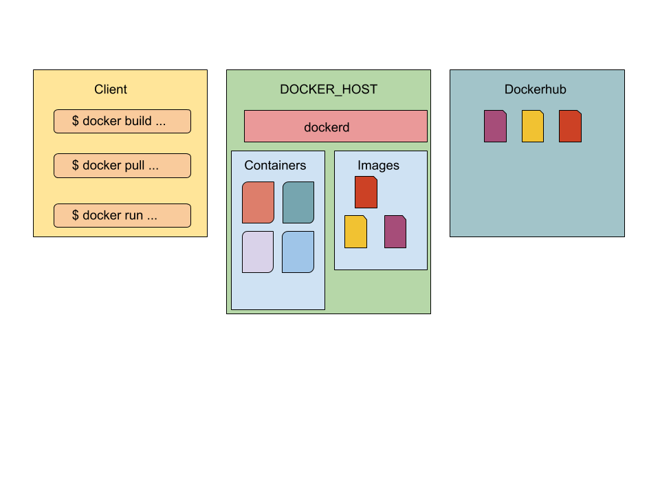

<!doctype html>
<html lang="sv">
<meta charset="utf-8" />
<title>vlinux - Docker</title>

<!-- Mithril HTML Slideshow styles -->
<link href="../../css/mithril-slideshow.css" rel="stylesheet" />

<!-- Code formatting using highlight.js -->
<link rel="stylesheet" href="../../css/default.css">
<link rel="stylesheet" href="../../css/tomorrow.css">
<script src="../../js/highlight.pack.js"></script>

<!-- Text formatting using Markdown through showdown.js -->
<script src="../../js/showdown.min.js"></script>

<style>
    @import url('https://fonts.googleapis.com/css2?family=Ubuntu+Mono&display=swap');
    h1 {
        border-bottom: 2px solid lime;
    }
    #slide {
        font-family: 'Ubuntu Mono', monospace;
        color: lime;
    }

    ul {
        list-style-type: none;
    }

    li:before {
        content: "$ ";
    }

    ul li ul li:before {
        content: "- ";
    }
</style>


<!-- Here comes the slides in order -->
<script data-role="slide" data-markdown type="text/html">
#vlinux - about Docker
###Kenneth Lewenhagen, dbwebb
</script>


<!-- Slide -->
<script id="slide" data-role="slide" data-markdown type="text/html">
# What is Docker?

<p><q>
Docker is an open platform for developing, shipping, and running applications.
</q></p>

</script>


<!-- Slide -->
<script data-role="slide" data-markdown type="text/html">
# Docker

* 2013
* Containers
* No Hypervisor - app and OS share resources
* Runs on top off existing OS
* OS does not matter
* Packaged/distributed with all necessary parts
* Less space (than for example Virtual Machines)
* Less resources - share OS kernel

</script>


<!-- Slide -->
<script data-role="slide" data-markdown type="text/html">
# Docker parts

* Docker Engine
    * Client - Server
    * Docker CLI -> REST API -> Docker daemon
* Docker Registry
    * Dockerhub
* Docker Objects
    * images, containers, volumes, network

</script>


<!-- Slide -->
<script data-role="slide" data-markdown type="text/html">
# Docker daemon

* dockerd
* Listens for API requests
* Manages images, containers, volumer, network

</script>


<!-- Slide -->
<script data-role="slide" data-markdown type="text/html">
# Docker CLI

* Sends commands to dockerd

</script>


<!-- Slide -->
<script data-role="slide" data-markdown type="text/html">
# Docker Registry

* Stores images
* Public/locally
* Dockerhub (default)

</script>


<!-- Slide -->
<script data-role="slide" data-markdown type="text/html">
# Docker Objects

* images
* containers
* (volumes, network)

</script>


<!-- Slide -->
<script data-role="slide" data-markdown type="text/html">
# images

* Readable template to create a Docker container
* Layer system - only top is writable
* Each instruction in Dockerfile creates a layer in the image
</script>


<!-- Slide -->
<script data-role="slide" data-markdown type="text/html">
# container

* Runnable instance of an image
* Destroyed when shut down

</script>


<!-- Slide -->
<script data-role="slide" data-markdown type="text/html">
# Docker architecture


</script>


<script data-role="slide" data-markdown type="text/html">
# End
</script>


<!-- include essential js-script -->
<script src="../../js/mithril.min.js"></script>
<script src="../../js/mithril-slideshow.js"></script>
<!-- default to theme 3 -->
<script>app.useTheme(3);</script>

</html>
